| 1. Création de l'image de relief Créez une image de relief pas trop accidentée. Un relief lisse donne des cratères plus réalistes. L'algorithme de subdivision #1
avec ses paramètres par défaut convient parfaitement.
|
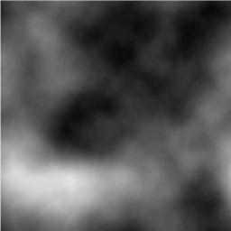 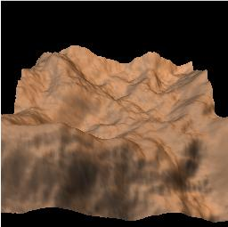 |
| 2. Création d'une plaine à
l'aide de la transformation de puissance Les cratères ont un air plus naturel sur une plaine. La transformation de puissance permet d'en obtenir une en diminuant l'altitude des parties les plus basses, sans toucher aux sommets. Un exposant de 3 suffit ici
pour donner le résultat escompté.
|
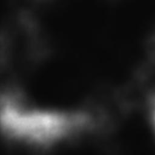  |
| 3. Ajustement de la densité de l'image
pour permettre le creusage des cratères Augmentez la luminosité et diminuez e contraste de façon à ce que les zones basses apparaissent gris foncé plutôt que noir. |
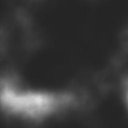 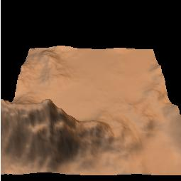 |
| 4. Éparpillement de
cratères sur le terrain C'est la partie la plus amusante. Cliquez sur "Répéter" jusqu'à ce que vous ayez assez de cratères à votre goût. Si vous cliquez sur "Appliquer" plus d'une fois, vous ne ferez que remplacer les 10 cratères que vous venez de dessiner par 10 nouveaux cratères. Un paramètre important dans le sous-dialogue "Diamètre" est la distribution. C'est en gros l'exposant appliqué au diamètre du cratère, choisi aléatoirement. À 1, tous les diamètres situés entre "Limite 1" et "Limite 2" ont des chances égales d'être choisis. La distribution des diamètres est alors uniforme. Le défaut est 2. La distribution des diamètres est alors parabolique. Il y a moins de grands cratères, et davantage de petits. Pour obtenir suffisamment de petits cratères ici, une distribution de 8 a été utilisée. DG = le diamètre généré, en pixels (d'après une racine aléatoire, uniformément distribué) DR = le diamètre résultant, en pixels L1, L2 = les limites 1 et 2, en pixels E = l'exposant On normalise d'abord la différence entre DG et L1, relativement à L2-L1, de telle sorte que cette différence se situe entre 0 et 1. On applique l'exposant à cette valeur, puis on multiplie le résultat par L2-L1 pour reconstituer une valeur en pixels: DR = [ puissance( (DG-L1)/(L2-L1), E) x (DG-L1) ] + L1 |
  |
| 5. Calcul et enregistrement du résultat Calculez le résultat avec moon.pov, en cliquant Cette définition n'utilise pas les paramètres de caméra calculés à partir de l'aperçu, naturellement, puisqu'il s'agit simplement de montrer l'enroulement du relief autour d'une sphère. Si vous êtes satisfait du résultat, sauvez-le sous craters.png. C'est le nom de l'image de relief utilisée pour la "carte de bosses" ("bump map") dans sea_n_moon.pov. |
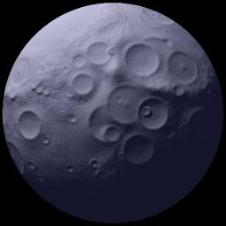 |
| 1. Création de l'image de relief Un relief avec une grande vallée peut être créé de deux façons: en utilisant le "crayon relief" pour creuser la vallée dans un terrain relativement uniforme, ou en employant le générateur aléatoire à répétition jusqu'à l'obtention de la vallée désirée. Le relief à gauche a
été généré en changeant la racine
aléatoire à répétition, en cliquant sur le
bouton "Rafraîchir" (la 15e racine a été la bonne).
Le paramètre de distribution a été
réglé à une valeur élevée, afin
d'accroître la probabilité d'obtenir un grand espace
dégagé. Voir le tutoriel sur le
désert pour une explication du paramètre de
distribution.
La caméra est réglée de telle sorte que la vallée devienne parallèle à l'axe de vision. La flèche rouge, sur l'image de droite, montre approximativement où se trouve notre caméra. 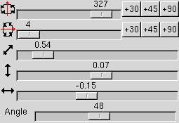 La scène rendue avec sea_n_moon.pov montre que le plan d'eau est caché sous le relief. Pour voir le reflet du satelllite, il faut accroître la hauteur du plan d'eau en modifiant le fichier Povray, ou encore diminuer l'altitude du fond de la vallée en utilisant l'outil luminosité / contraste de Geomorph. 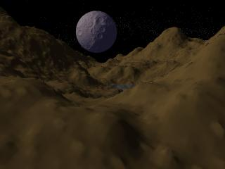
|
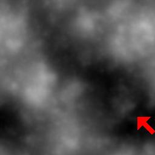 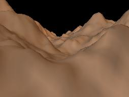 |
| 2. Diminution de l'altitude du fond de la
vallée Modifions la luminosité du relief
plutôt que la hauteur du plan d'eau. Une correction de
luminosité de -12 suffit pour nos besoins.
Le résultat est meilleur, mais le relief n'a pas encore un air érodé. 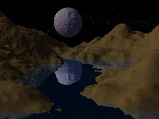
|
  |
| 3. Préparation du terrain à
l'érosion avec la pluie, en utilisant l'érosion
"fantaisiste" Les paramètres par défaut conviennent ici. |
 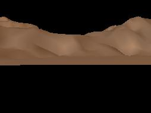 |
| 4. Ajustement de la luminosité et du
contraste Le contraste de l'image est trop faible, il ne vaut même pas la peine de calculer la scène. Les réglages proposés dans l'outil luminosité / contraste donnent un fond de vallée noir ou à peu près noir. Le résultat n'est pas mauvais, mais est un peu étrange. L'érosion par la pluie fera disparaître la plupart des "trous" ou "boucles" qui laissent cette impression d'étrangeté.  |
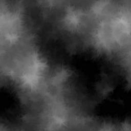 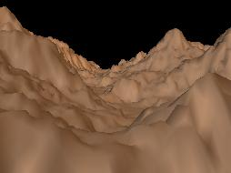 |
| 5. Érosion par la pluie L'érosion par la pluie est un processus simple mais lent. Il éparpille des gouttes d'eau aléatoirement sur la surface du sol, et laisse ces gouttes descendre en déplaçant de la terre tant que la pente n'est pas nulle. Le processus n'additionne pas les gouttes pour créer des rigoles et des ruisseaux (pas encore!). Ici 300000 gouttes ont été jetées sur le sol. Peut-être vous satisferez-vous de moins, en particulier si votre ordinateur est lent! Cliquez trois fois sur "Répéter" pour obtenir ce résultat. Nous sommes partis d'une image de 512x512 pixels. Pour une image de 256x256, 75000 gouttes donneront le même résultat. Pour une image de 1024x1024, ce sera 4 x 300000 gouttes. Le résultat paraît plus naturel maintenant. Cependant, l'outil "Crêtes" nous donnera une image plus douce.  |
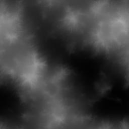 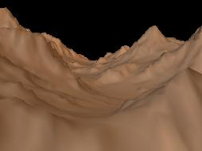 |
| 6. Utiliser l'outil "Crêtes" pour
adoucir le terrain érodé L'outil "Crêtes" produit un genre d'érosion par gravité, en répétant des micro-affaissements. Des parties du sol tombent sur des parties de plus basse altitude. Des crêtes émergent là où la pente est nulle et l'altitude est à son maximum. Contrairement à l'érosion par la pluie, cette transformation entraîne une perte de sol, si bien que l'altitude moyenne du relief diminue. Réglez le nombre de répétitions au niveau désiré, remettez à 0 et recommencez si vous n'êtes pas satisfait. Voici le résultat avec 6 répétitions: 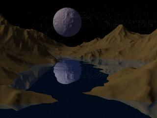
|
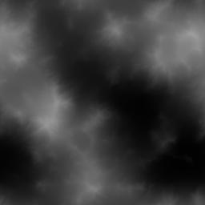  |
| 7. Utilisation de la transformation
logarithmique pour créer un étang L'image proposée, au début de ce tutoriel, montre un étang avec un rivage non accidenté. Une légère augmentation de l'altitude du rivage à l'entrée de la baie obtenue après l'étape 6 aura pour effet de fermer la baie et d'en faire un étang. La transformation logarithmique réalisera ce changement. Elle élève les parties les plus basses du relief sans élever les parties les plus hautes. Pensez à la forme d'une courbe logarithmique pour en comprendre l'effet sur l'altitude. Le paramètre est interprété comme un pourcentage. Utiliser 0,5 sur un maximum de 10 signifie que 5% du résultat de la transformation logarithmique sera fusionné avec 95% de l'image orgininale. 0,5 est suffisant ici, à moins de désirer un effet différent. |
 |
 Retour à l'index de la
documentation
Retour à l'index de la
documentation